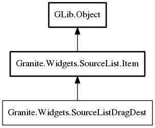

SourceListDragDest
Object Hierarchy:
Description:
Namespace: Granite.Widgets
Package: granite
Content:
Methods:
Inherited Members:
All known members inherited from class Granite.Widgets.SourceList.Item

All known members inherited from class GLib.Object